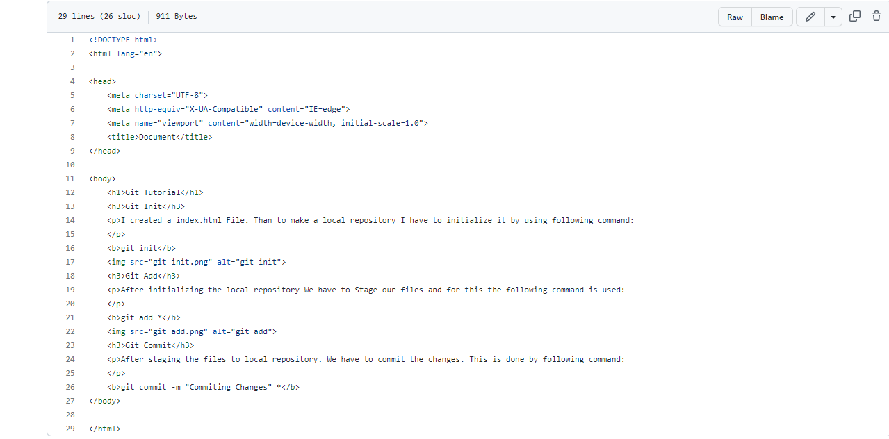
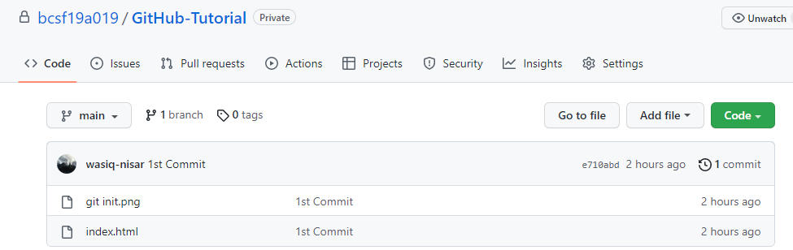

I created a index.html File. Than to make a local repository I have to initialize it by using following command:
git init
After initializing the local repository We have to Stage our files and for this the following command is used:
git add *
After staging the files to local repository. We have to commit the changes. This is done by following command:
git commit -m "Commiting Changes" *
In order to cread a GitHub Repository:
To Store our Repository on GitHub we have to add a origin. This is done by following command:
git remote add origin https://github.com/bcsf19a019/GitHub-Tutorial.gitAbove link will vary from repository to repository

Before Pushing data to the GitHub repository we have to make the main Branch. This is done by the following command:
git branch -M main
After making Main branch we have to push the data on the GitHub. This is done by the following command:
git push -u origin main
Whenever changes are made in a file or new files are added it has to be added, cmmitted and pushed again. Otherwise the changes made to the file are not made in repository
For Example Some Changes are made in my index.html file and some png images are added to file after last Commit. So I have to add, commit and then push it to Repository.
Before Adding, Commiting and Pushing. The changes made in index.html are not made in GitHub Repository as shown in figure below:
 Afeter Adding, Commiting and Pushing. The changes are made in index.html file and new .png files are added in GitHub Repository as shown in figure below: